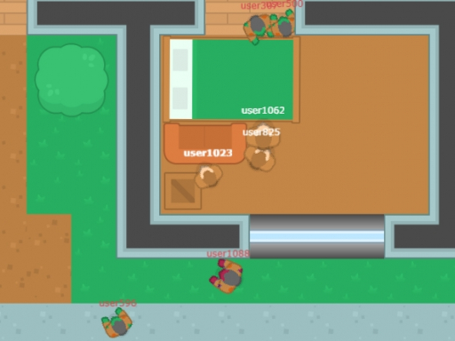
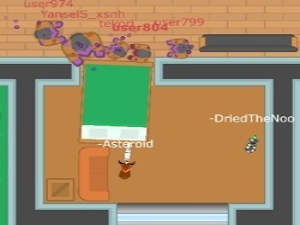
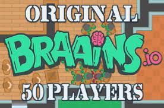

Introduction
Braains.io is a thrilling multiplayer zombie survival arena where players choose their destiny: fight for survival as a human or hunt others as a brain-hungry zombie. What makes it truly unique is its dynamic dual-role transformation system. Unlike traditional .io games where you stick to one faction, Braains.io allows you to instantly switch between human and zombie forms mid-match. This creates an unpredictable predator-versus-prey dynamic. Players love the fast-paced, skill-based gameplay that requires quick reflexes and strategic thinking. Whether you are outsmarting the horde or coordinating with fellow undead to corner survivors, every match offers a fresh, adrenaline-pumping experience. It is accessible directly in the browser, making it perfect for quick, intense gaming sessions.
Getting Started

Starting your journey in Braains.io is seamless since it runs directly in your web browser without any downloads. Upon launching the game, you will spawn into a multiplayer arena. You can choose to start as a human survivor or immediately transform into a zombie. Use the WASD keys or arrow keys to navigate the map. As a human, your primary goal is to avoid contact with zombies while surviving as long as possible. Use the environment to break their line of sight. If you choose to be a zombie, your objective is to chase down and infect human players to grow your horde. The transformation mechanic is central to the game; you can use the designated on-screen button to switch forms at any time without cooldowns. Mastering the basic movement and understanding when to switch factions based on the current battlefield dynamics are your first steps to dominating the arena.
Basic Tips
1. Utilize Map Geometry: As a human, never run in straight lines across open spaces. Use obstacles, walls, and buildings to break the zombies' line of sight and create escape routes. 2. Stick to the Edges: When surviving as a human, stay near the map boundaries. This limits the angles from which zombies can approach you, giving you more time to react. 3. Isolate Your Targets: Playing as a zombie? Do not chase groups of humans. Target players who are wandering away from the main pack for an easy infection. 4. Master Diagonal Movement: Combine WASD inputs to move diagonally. This maximizes your speed and makes your movement pattern unpredictable, helping you dodge zombie attacks or escape chases effectively. 5. Monitor the Horde Size: Keep an eye on the player count. If zombies are overwhelming, switch to human to challenge yourself, or switch to zombie if humans are dominating to help balance the match.
Advanced Strategies

1. Coordinated Zombie Traps: When playing as a zombie, communication and positioning are key. Work with other zombies to flank and corner isolated survivors. Use one zombie to herd the human toward a dead end while others wait in ambush. 2. Strategic Form Switching: Advanced players use the transformation mechanic to manipulate the game's balance. If you are dominating as a zombie and the human count is dropping too fast, switch to human to increase your personal survival challenge and farm points. Conversely, switch to zombie when the human team is playing too defensively. 3. Bait and Switch Tactics: As a human, intentionally run toward a narrow corridor to bait a zombie, then quickly switch to a zombie yourself. The pursuing zombie will be confused, and you can immediately join the hunt from behind. 4. Edge Camping with Purpose: Instead of just hiding at the edges as a human, use the corners to set up quick directional changes. When a zombie commits to a chase, abruptly reverse your diagonal movement to slip past them.
Pro Tips

1. Predictive Infection: As a zombie, don't aim for where the human is; aim for where they are going. Anticipate their escape route based on map layout and cut them off. 2. Micro-Transformations: Use the instant transformation to your advantage in tight spots. If cornered as a human, instantly transform into a zombie to turn the tables and infect your pursuer. 3. Aggro Management: In a group of humans, let the zombies chase the most panicked player. Stay calm, move steadily, and let the horde exhaust themselves on your less disciplined allies. 4. Score Optimization: To climb the leaderboard, balance your playstyle. Don't just mindlessly chase; calculate the risk versus reward of every infection attempt to maintain a high survival-to-infection ratio.
Conclusion
Braains.io offers a uniquely thrilling twist on the classic zombie survival genre with its seamless faction-switching mechanic. Whether you prefer the tense evasion of a human or the relentless hunt of the undead, the game delivers fast-paced, skill-based action. Jump into the browser, test your reflexes, and see if you can top the leaderboard. Give it a try today and experience the ultimate predator-versus-prey arena!